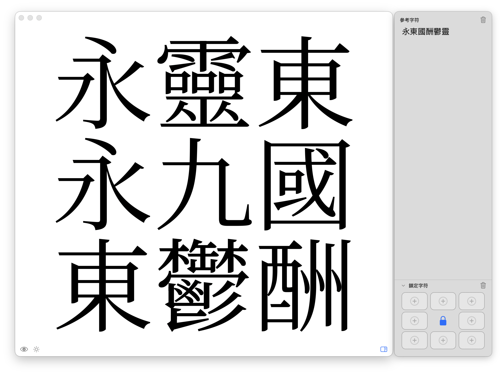
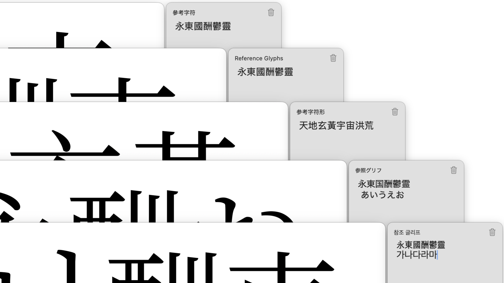

九宮格預覽 Pro
Nine-grid preview for Glyphs.
專為 Glyphs 3 打造的九宮格預覽工具。
透過 Glyphs 外掛管理員安裝 · 14 天免費試用
核心功能
快速測試字符組合，發現問題搭配

參考字 GIF (待替換)
參考字
輸入常用字，自動隨機排列在周圍。點擊重新洗牌，快速發現問題組合。

鎖定字 GIF (待替換)
鎖定字
將特定字符固定在指定位置，測試固定搭配的字距。設定隨檔案保存，團隊協作無縫銜接。
進階整合
與 Glyphs 生態系無縫協作

原生體驗 GIF (待替換)
原生 macOS 體驗
拖放操作、字符選擇器，與 Glyphs 工作流程無縫整合。

透寫台 GIF (待替換)
透寫台同步
按住 Shift 即時比較版本差異，與透寫台無縫整合。
Speaking Your Language.
原生介面，無縫接軌
準備好開始了嗎？
也可從 GitHub 手動下載，但建議透過外掛管理員安裝以獲得自動更新。
常見問題
- 買斷還是訂閱？
- 一次購買，永久使用。
- 可以裝幾台電腦？
- 單一使用者授權 — 您可以在自己的所有 Mac 上使用。
- 有試用嗎？
- 有，免費試用 14 天。
Built for my own workflow.
這原本是我為了解決日常造字痛點而開發的工具。因為它極大提升了我的效率，現在整理為 Pro 版本，希望能幫助到同樣追求細節的你。
- • 資料只存在本地 .glyphs 檔案
- • 不上傳任何字型資料到雲端